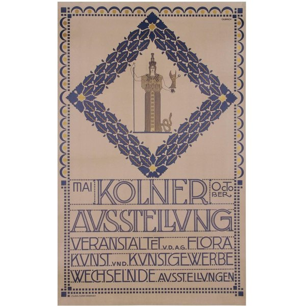

CRVI000246Keiji Usami - Louisiana exhibition poster
Exhibition poster · Louisiana Museum of Modern Art
Exhibition poster · Louisiana Museum of Modern Art

CRVI000247Marisol - Untitled
Exhibition Poster · 1960-65 · 1960-65
Exhibition Poster · 1960-65 · 1960-65

CRVI000248Tetsuya Ishida - Mebae
Exhibition Poster · 1998 · 1998
Exhibition Poster · 1998 · 1998

CRVI000819Seymour Chwast - Push Pin Butcher
Mixed media · 46 × 74 cm · 1981
Mixed media · 46 × 74 cm · 1981

CRVI002233Oskar Schlemmer - Bauhausausstellung 1923
1923
1923

CRVI002498Koichi Sato - グラフィックデザイナー 佐藤晃一展 (Graphic Designer Koichi Sato)
2017
2017

CRVI002508Milton Glaser - Floating pear
1977
1977

CRVI002511Josef Müller-Brockmann - der Film
1960
1960

CRVI002519Josef Müller-Brockmann - Helmhaus Zürich: Aus der Sammlung des Kunsthauses Zürich, Neuere Schweizer Kunst
1953
1953

CRVI002542Berthold Löffler - Kunstschau Wien 1908
1908
1908

CRVI002626Koloman Moser - Secession: V. Kunstausstellung
1899
1899

CRVI002632Alfred Roller - Plakat für die XIV. Ausstellung der Secession
1902
1902

CRVI002634Joseph Maria Olbrich - Kölner Ausstellung
1907
1907

CRVI002639Ferdinand Andri - XXVI. Ausstellung Secession
1906
1906

CRVI002640Ferdinand Hodler - Secession XIX. Ausstellung
1904
1904

CRVI002646Joseph Maria Olbrich - Plakat für die II. Ausstellung der Wiener Secession
1898
1898

CRVI002648Egon Schiele - Secession 49. Ausstellung
1918
1918